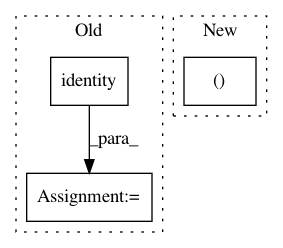

f73cdc286a3e125cf7019336621cb10370ebfd52,tensorflow_transform/tf_utils.py,,_reduce_vocabulary_inputs,#Any#Any#Any#,71
Before Change
greater_assert = tf.Assert(
tf.greater_equal(tf.reduce_min(input_tensor=labels), 0), [labels])
with tf.control_dependencies([less_assert, greater_assert]):
labels = tf.identity(labels)
positive_weights = (
tf.cast(labels, tf.float32) * tf.cast(weights, tf.float32))
summed_positive_weights = tf.math.unsorted_segment_sum(
positive_weights, unique.idx, tf.size(input=unique.y))
After Change
max_label_value = tf.cast(tf.reduce_max(input_tensor=labels), tf.int32)
one_hot_labels = tf.one_hot(labels, max_label_value + 1)
broadcast_weights = tf.cast(
tf.broadcast_to(tf.reshape(weights, (-1, 1)), tf.shape(one_hot_labels)),
dtype=tf.float32)
positive_weights = (tf.cast(one_hot_labels, tf.float32) * broadcast_weights)
summed_positive_per_value_and_label = tf.math.unsorted_segment_sum(
In pattern: SUPERPATTERN
Frequency: 4
Non-data size: 3
Instances
Project Name: tensorflow/transform
Commit Name: f73cdc286a3e125cf7019336621cb10370ebfd52
Time: 2019-04-25
Author: askerryryan@google.com
File Name: tensorflow_transform/tf_utils.py
Class Name:
Method Name: _reduce_vocabulary_inputs
Project Name: tensorflow/tpu
Commit Name: 2fc106f4278d139b39da993721baa07382c55ea3
Time: 2019-02-21
Author: 44505896+gmadrone@users.noreply.github.com
File Name: models/experimental/mask_rcnn/dataloader.py
Class Name:
Method Name: serving_input_fn
Project Name: analysiscenter/batchflow
Commit Name: 6dad66511b8432570eb53b67b8fd889913ac15e3
Time: 2017-11-01
Author: rhudor@gmail.com
File Name: examples/opensets/mnist_model2.py
Class Name: MyModel
Method Name: _build
Project Name: metric-learn/metric-learn
Commit Name: 130cbadff294b686e466d430f26b2d069f6bbf59
Time: 2019-06-07
Author: 31916524+wdevazelhes@users.noreply.github.com
File Name: metric_learn/sdml.py
Class Name: _BaseSDML
Method Name: _fit